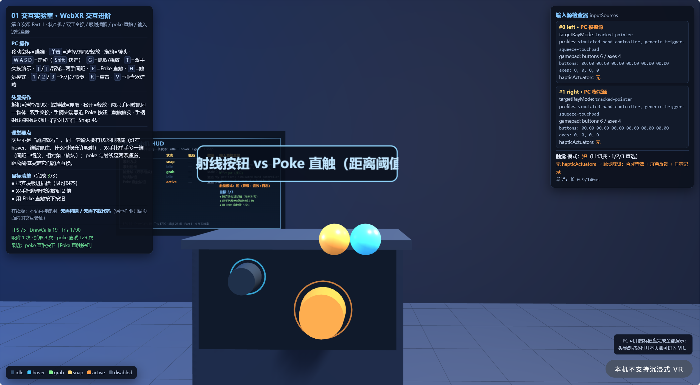
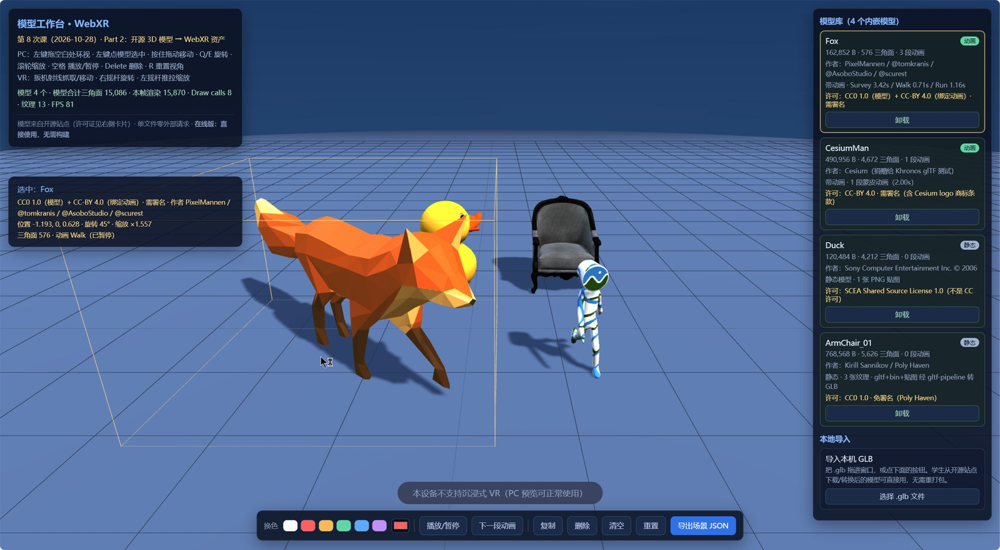
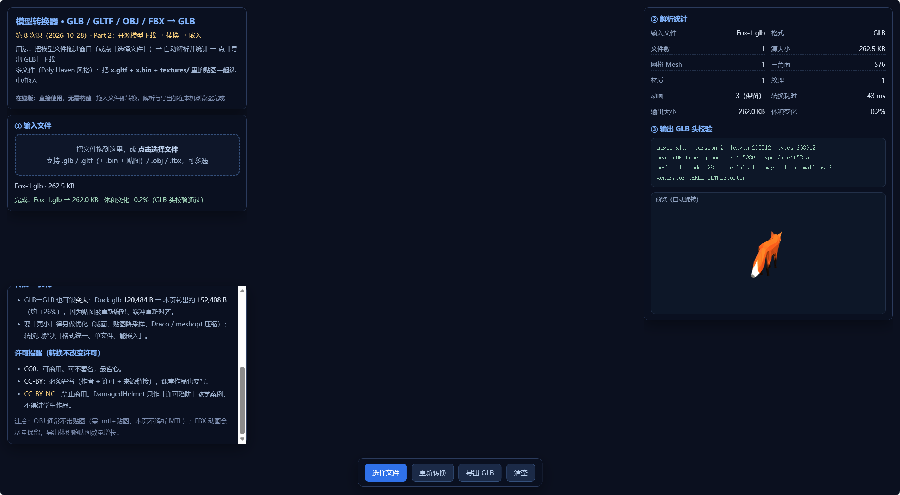

Fox 旋转45°、放大1.56倍、染橙色、暂停动画



{
"format": "workbench-scene",
"version": 1,
"generator": "02_模型工作台_WebXR.html",
"normalizedHeight": 1.2,
"unit": "meter",
"modelCount": 4,
"models": [
{
"id": "fox",
"name": "Fox",
"file": "Fox.glb",
"license": "CC0 1.0（模型）+ CC-BY 4.0（绑定动画）· 需署名",
"author": "PixelMannen / @tomkranis / @AsoboStudio / @scurest",
"pos": [
-1.547,
0,
0.117
],
"rot": 45,
"scale": 1.557,
"color": "#ffb84d",
"anim": "Walk:paused",
"triangles": 576
},
{
"id": "cesiumman",
"name": "CesiumMan",
"file": "CesiumMan.glb",
"license": "CC-BY 4.0 · 需署名（含 Cesium logo 商标条款）",
"author": "Cesium（捐赠给 Khronos glTF 测试）",
"pos": [
1.25,
0,
0.9
],
"rot": 0,
"scale": 1,
"color": "#ffffff",
"anim": "animation_0:playing",
"triangles": 4672
},
{
"id": "duck",
"name": "Duck",
"file": "Duck.glb",
"license": "SCEA Shared Source License 1.0（不是 CC 许可）",
"author": "Sony Computer Entertainment Inc. © 2006",
"pos": [
-0.55,
0,
-1.5
],
"rot": 0,
"scale": 1,
"color": "#ffffff",
"anim": null,
"triangles": 4212
},
{
"id": "armchair",
"name": "ArmChair_01",
"file": "ArmChair_01.glb",
"license": "CC0 1.0 · 免署名（Poly Haven）",
"author": "Kirill Sannikov / Poly Haven",
"pos": [
1.25,
0,
-1.5
],
"rot": 0,
"scale": 1,
"color": "#ffffff",
"anim": null,
"triangles": 5626
}
]
}
本页由第 8 次课作品墙生成；全部提交作品都会公开展示。如作者要求更正一句话、署名或许可信息，请联系教师修改。